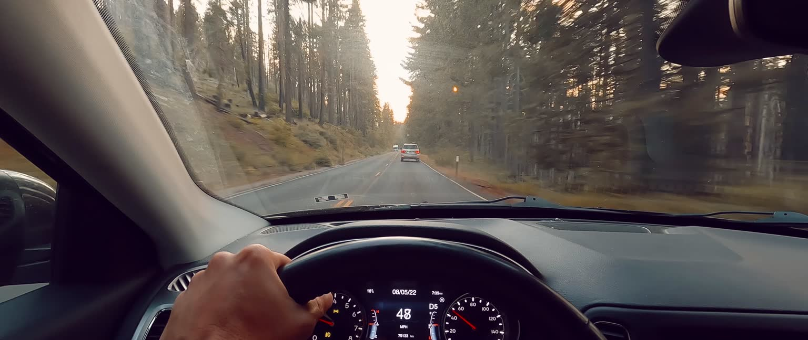

Luke D. Aadalen is the author of #perspective, a devotional about going beyond the surface and pursuing God’s perspective.
Luke’s messages will be added here.
#perspective by Luke D. Aadalen
Ordering details will be added here.
Giving and partnership details will be added here.